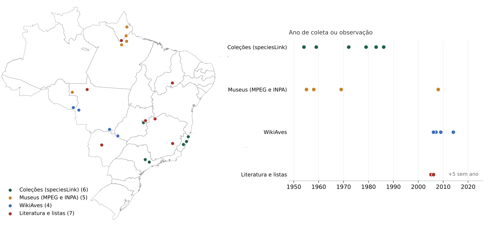
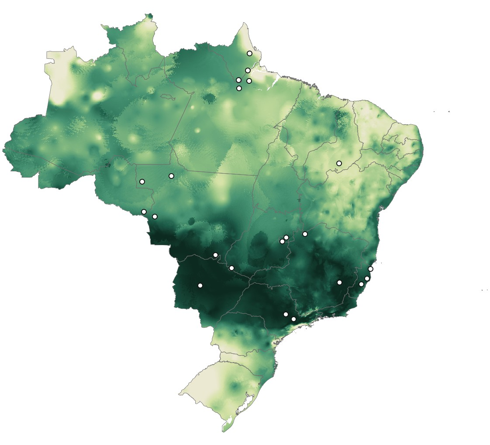
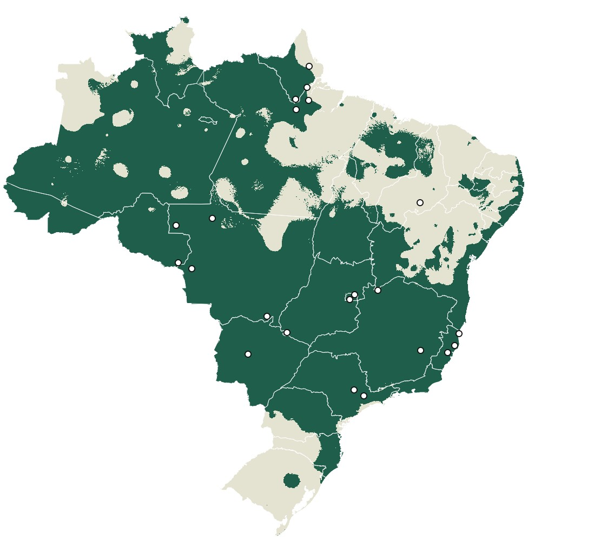
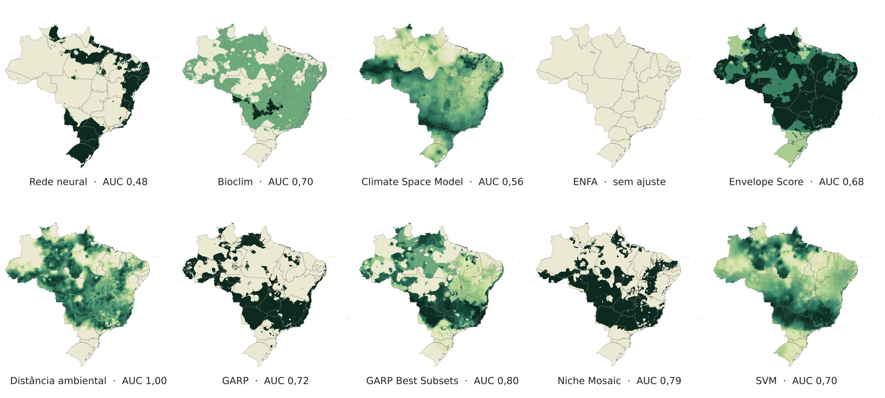

Bicudo: onze algoritmos para modelar uma ave ameaçada com 22 registros
Registros de coleções, museus, ciência cidadã e literatura, uma PCA do clima e a comparação entre o MaxEnt e dez algoritmos do openModeller para Sporophila maximiliani.
- Entrega
- Modelagem sob demanda, 2018
- Espécie
- Sporophila maximiliani, o bicudo
- Meu papel
- Compilação dos registros, modelagem e mapas
- Ferramentas
- MaxEnt · openModeller · ArcMap


Adequabilidade (MaxEnt)
Limiar do 10º percentil de presença
22 registros após a limpeza, de 1954 a 2014, coloridos pela fonte: coleções do speciesLink, museus, WikiAves e literatura. À direita, o ano de coleta ou observação de cada um.
MaxEnt com os 22 registros e três eixos de PCA do clima. À direita, o mesmo modelo com o limiar do 10º percentil de presença de treino: cerca de 70% do país fica acima dele, e ficam de fora o semiárido nordestino e o extremo sul.
Os dez algoritmos do openModeller com todos os registros, cada um normalizado de 0 a 1. As previsões divergem muito entre si, e o ENFA não produziu ajuste. A AUC indicada é a de treino.
O problema
O bicudo é uma das aves mais visadas pelo tráfico de aves canoras no Brasil, classificada como Em Perigo pela IUCN e Criticamente em Perigo no país. Os registros confiáveis são poucos e espalhados no tempo. O pedido era estimar onde o clima é adequado para a espécie com os dados disponíveis.
Os dados
22 registros após a limpeza, de 1954 a 2014: coleções do speciesLink (MBML e UNICAMP), Museu Paraense Emílio Goeldi e INPA, WikiAves, Taxeus, artigos, um plano de manejo e o Livro Vermelho. Como preditores, três eixos de uma PCA das 19 variáveis bioclimáticas recortadas para o Brasil.
O método
- Limpeza e georreferenciamento dos registros, com fonte, instituição e ano.
- PCA das 19 variáveis bioclimáticas no Brasil, com os três primeiros eixos como preditores.
- Três conjuntos de dados: todos os registros e subconjuntos de 70% e 90%, com o restante separado para teste.
- MaxEnt e dez algoritmos do openModeller: rede neural, Bioclim, Climate Space Model, ENFA, Envelope Score, distância ambiental, dois GARP, Niche Mosaic e SVM.
- Mapa de presença e ausência do MaxEnt pelo limiar do 10º percentil de presença de treino, no ArcMap.
O resultado
Com 22 registros, os algoritmos divergem muito. O MaxEnt aponta clima adequado em boa parte do Brasil central, da Amazônia e da costa leste.
- Os registros mais antigos vêm de coleções e museus; os mais recentes, de ciência cidadã e da literatura.
- GARP com Best Subsets e Niche Mosaic tiveram as maiores AUC de treino, sem contar a distância ambiental, que tende a reproduzir os próprios pontos.
- Clima adequado não significa presença: a captura ilegal eliminou a espécie de boa parte da área onde ocorria.